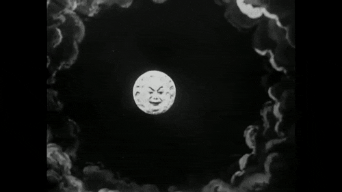
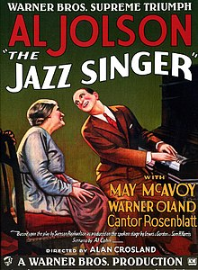
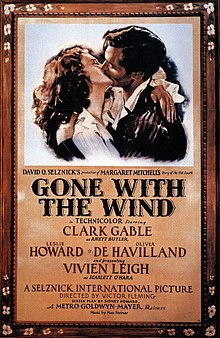

L'Arrivée d'un train en gare de La Ciotat o L'arrivée d'un train à La Ciotat (La llegada de un tren a la estación de La Ciotat)
(Es un documental mudo francés dirigido por Louis Lumière en 1895 y presentado por primera vez en enero de 1896)
La historia del cine comenzó el 28 de diciembre de 1895, cuando los hermanos Lumière proyectaron públicamente la salida de obreros de una fábrica francesa en Lyon, la demolición de un muro, la llegada de un tren(img 1) y un barco saliendo del puerto.
El éxito de este invento fue inmediato, no solo en Francia, sino también en toda Europa y América del Norte, donde Thomas Edison ya había grabado numerosas escenas que un espectador a la vez podía ver a través de un kinetoscopio.
En un año, los hermanos Lumière crearon más de diez películas, marcadas por la ausencia de actores y los decorados naturales, la brevedad, la ausencia de montaje y la posición fija de la cámara. Sin embargo, Alice Guy fue la primera persona en ser realizadora de una película, la fundadora del cine narrativo y de la narración cultural superando el cine de demostración de los hermanos Lumière y sentando las bases de lo que en el futuro se ha considerado ficción. También fue la primera persona que logró mantenerse económicamente a través de esta profesión. Su primera película -y por tanto, la primera película de la historia del cine- fue El hada de los repollos (La Fée aux Choux, 1896). Realizó muchas más películas, entre ellas Sage-femme de première classe (1902) y La Esméralda (1905). Tras el éxito de Guy, Georges Méliès decidió introducirse en esta profesión. Realizó películas con historias y decorados fantásticos, como "Fausto" y "Barba Azul" (1901), desarrolló las nuevas técnicas cinematográficas, sobre todo con Viaje a la Luna (1902)(img 2) y con Viaje a través de lo imposible (1904), aplicando la técnica teatral ante la cámara y creando los primeros efectos especiales y la ciencia-ficción filmada.

(img 2)
Le Voyage dans la Lune(Viaje a la Luna)
(es una película francesa de 1902, en blanco y negro, muda y de ciencia ficción dirigida por Georges Méliès)
A partir de entonces, la cinematografía no hizo más que mejorar y surgieron grandes directores como Murnau, Erich von Stroheim y Charles Chaplin. En Estados Unidos se hicieron películas de aventuras, como las de Douglas Fairbanks y dramas románticos como las de Valentino. Sin embargo, las de mayor belleza fueron fruto de la escuela cómica americana nacida a partir de la comedia de Mack Sennett, basada en slapsticks y en la estereotipación de figuras sociales como el policía o el gordo, el avaro y el bigotudo burgués.
Aquí recordemos especialmente a Buster Keaton y a Charles Chaplin. En 1927, se estrenó la primera película con sonido "El cantante de jazz"(img 3), a partir de la cual el cine tal y como se conocía dejó de existir y de un lenguaje en que primaba la expresividad de segmentos que se contrastaban y juntaban se impuso una mayor continuidad del relato y mayor fluidez argumental. Ese mismo año apareció el doblaje.

(img 3)
The Jazz Singer (El cantante de jazz o El cantor de jazz)
(Es el primer largometraje comercial con sonido sincronizado. Fue dirigido por Alan Crosland y estrenado el 6 de octubre de 1927)
En 1935 se filmó en TechnicolorLa feria de la vanidad (Becky Sharp), de Rouben Mamoulian; aunque artísticamente el color consiguió su máxima plenitud con Lo que el viento se llevó (1939)(img 4).
La primera proyección pública de cine digital en Europa se realizó en París, el 2 de febrero de 2000, utilizando MEMS (DLP (Procesado digital de luz) CINEMA) desarrollado por Texas Instruments.

(img 4)
Gone with the Wind(Lo que el viento se llevó)
(es una película estadounidense de los géneros épico, histórico y romántico de 1939, adaptación de la novela homónima de 1936 de Margaret Mitchell, producida por David O. Selznick y dirigida por Victor Fleming.)